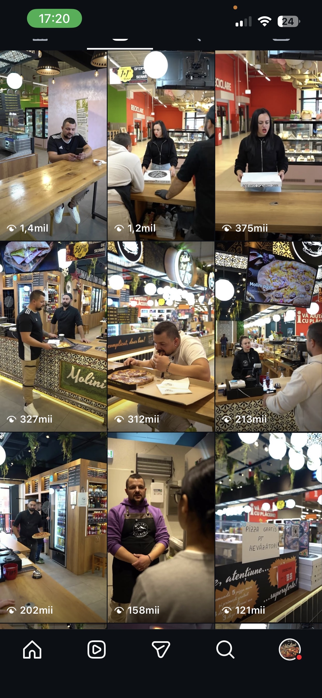
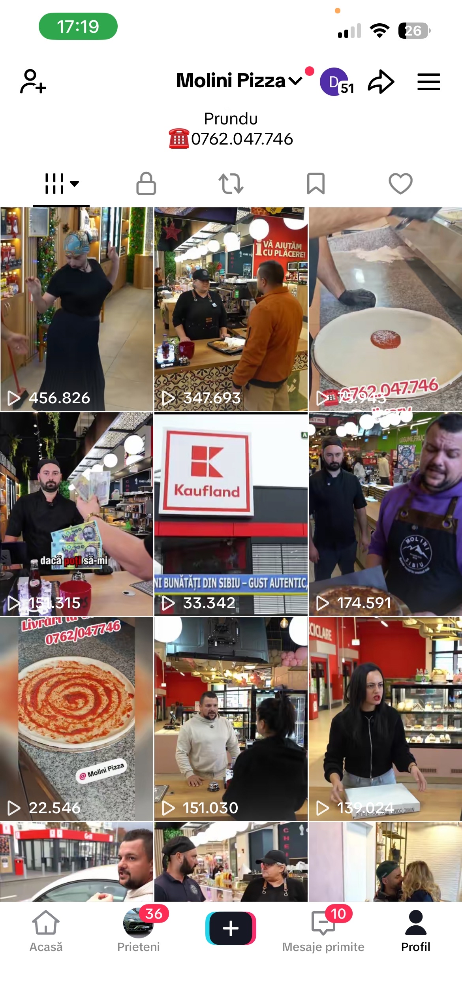

01 — VIDEOCLIPURI PREMIUM
Editare care opreşte


Editare care opreşte
thumb-ul.
Conţinut. Pur.
REZULTATELE NOASTRE



02 — PERFORMANCE ADS
Ieși pe profit
Ieși pe profit
din prima lună.
Recordurile noastre vorbesc singure:
lead-uri la 3–5 lei, interacțiuni la 0.05 lei — confirmate de Meta.
3–5
lei / lead
cost per lead — campanii Meta & Google
0.05
lei / interacțiune
marcat „High Performing" de Meta Ads
META ADS — DATE REALE · FEB–MAR 2026

← trage pentru a vedea tot →
03 — Web Design + Site-uri
Site-uri care
vând.
Website-uri premium, rapide și optimizate pentru conversie — prima impresie care nu se uită.
04 — SEO + Google
Vizibilitate
organică maximă.
Optimizare organică și campanii Google Ads cu impact real — brandul tău acolo unde îl caută clienții.
05 — Automatizări Business
Sisteme care
lucrează pentru tine.
Fluxuri automate care economisesc timp și cresc profitul — afacerea ta pe pilot automat.